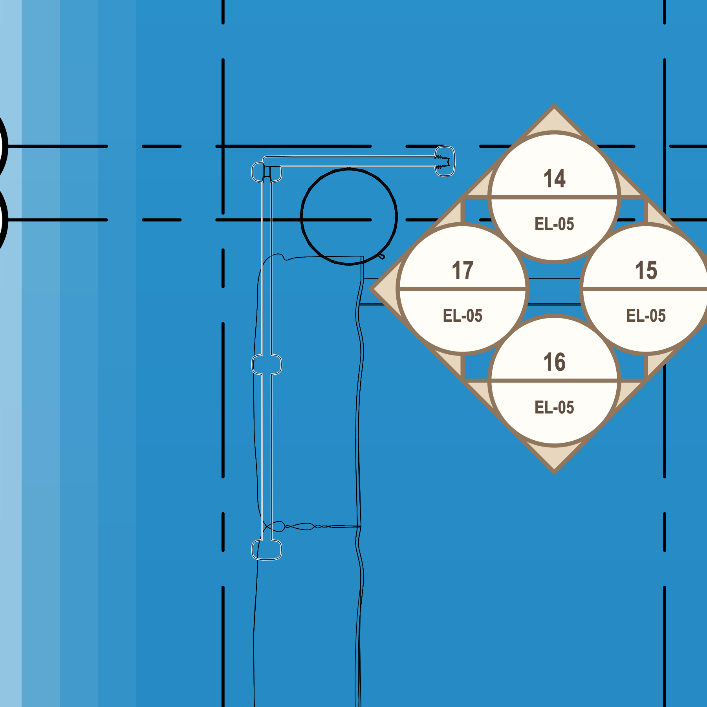
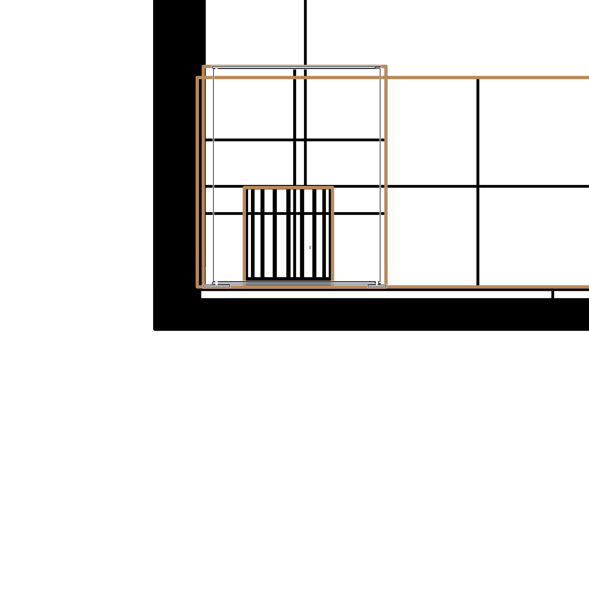
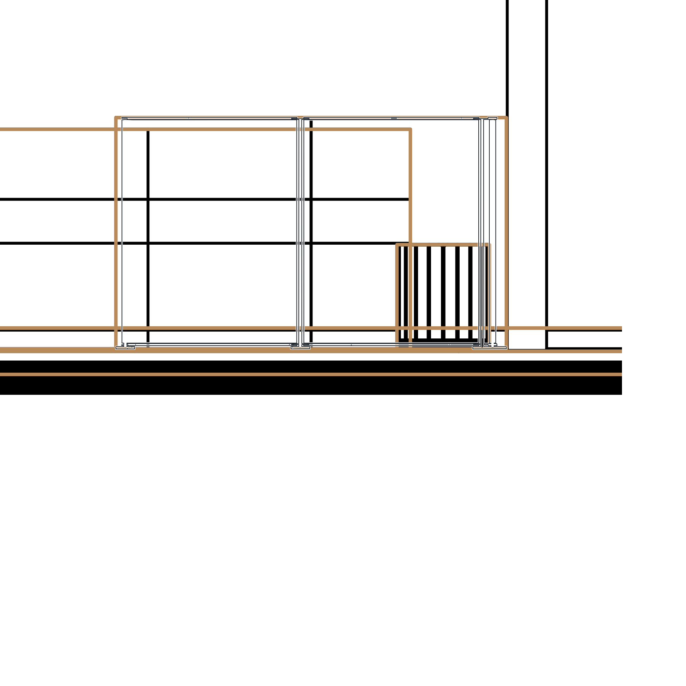
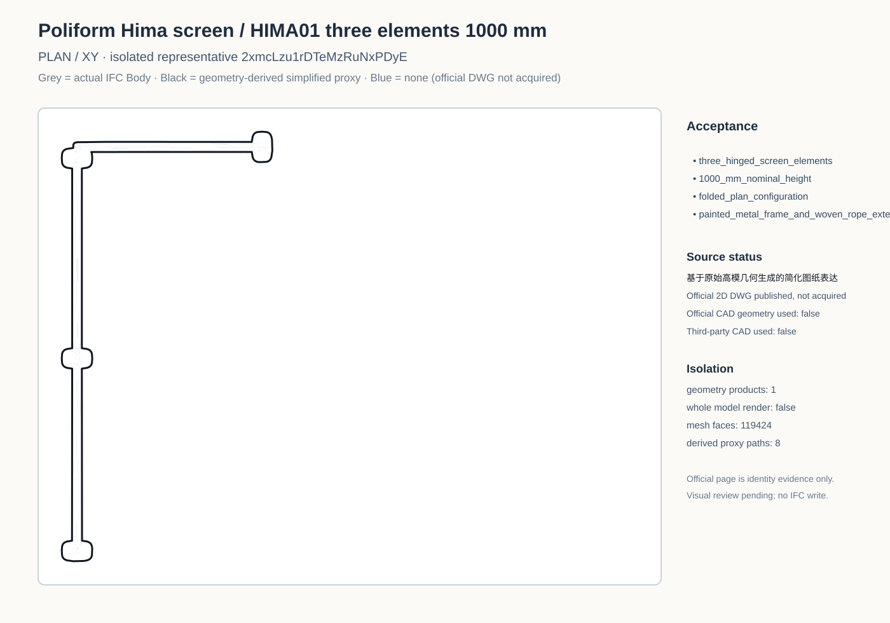
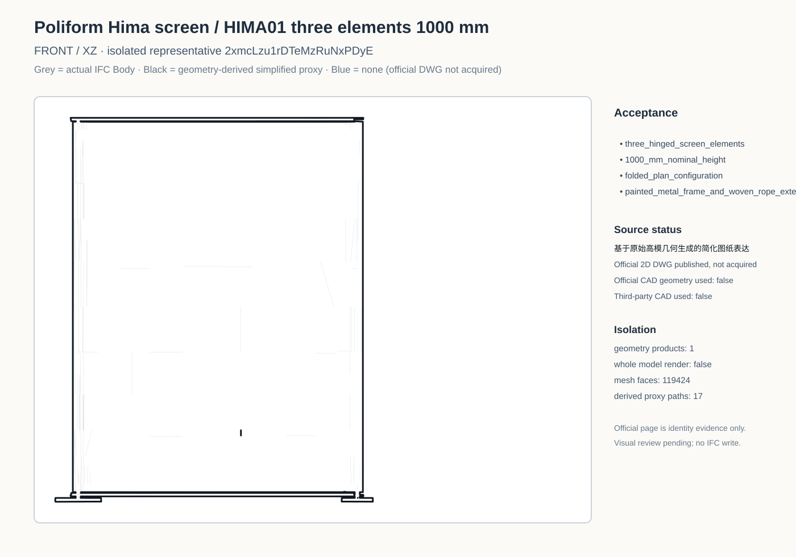
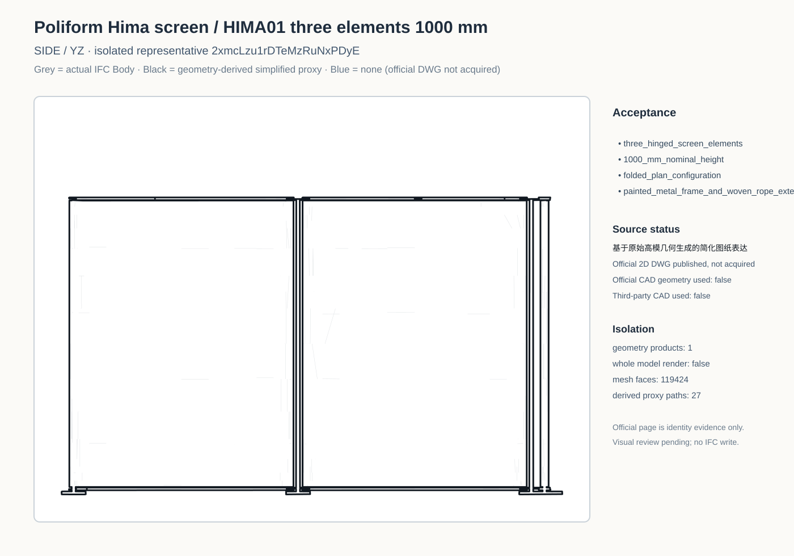
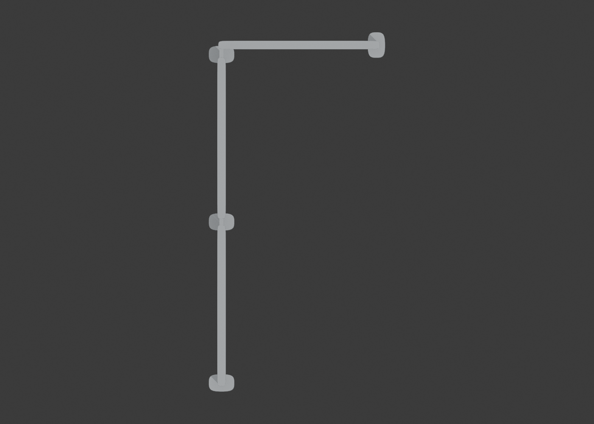
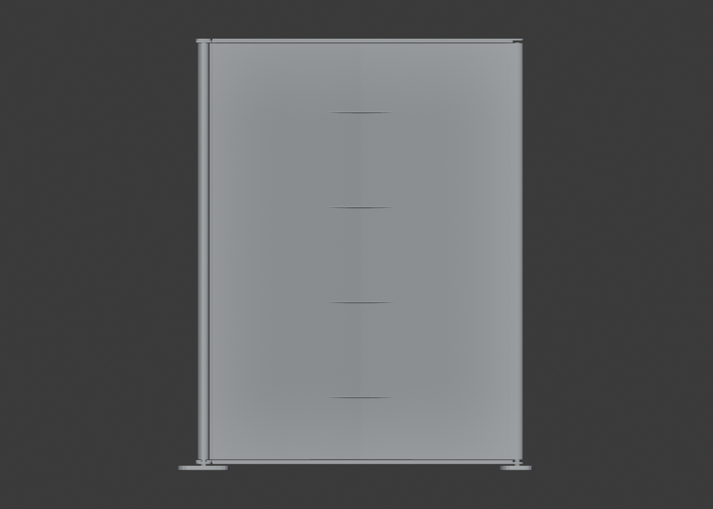
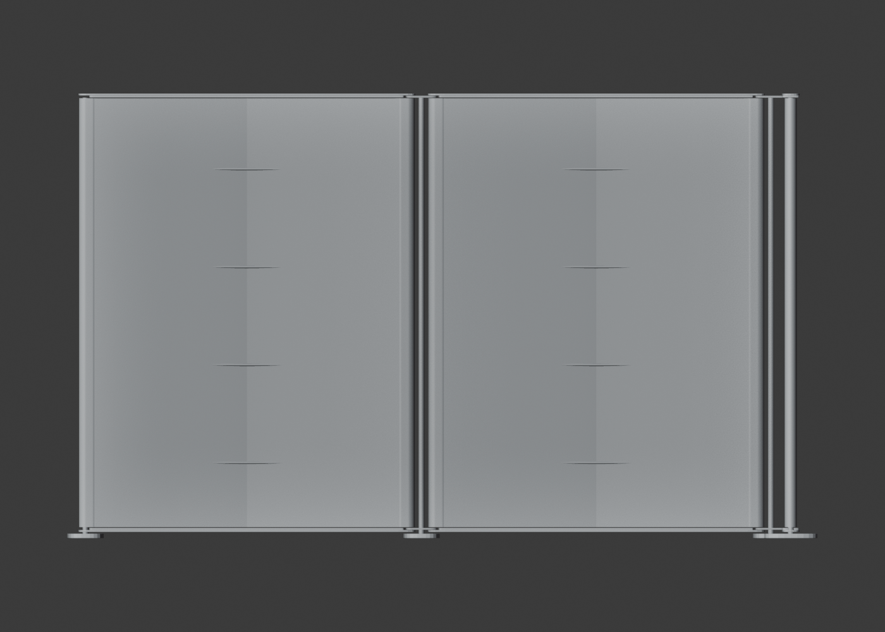
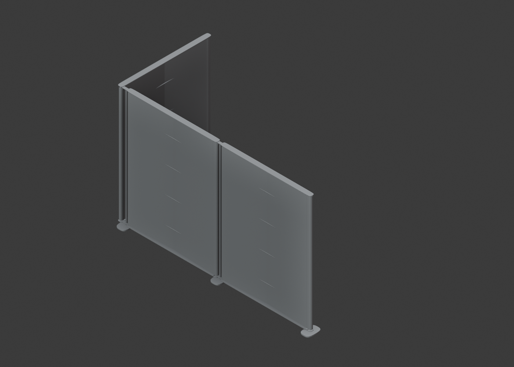

Furniture plan

Black line = simplified drawing representation derived from the original high-poly geometry. No blue line is shown because the official DWG has not been acquired. Visual review pending.










7a50b87e8f48a7c2bfbaa9f1dabdfca7155fa684b2325c66aa1ae15c8ab0a25c